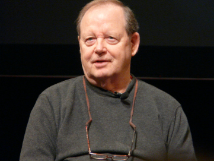
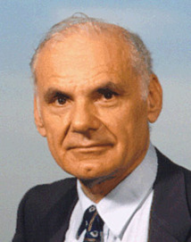
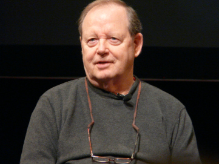
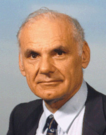
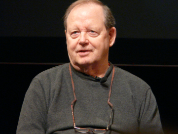
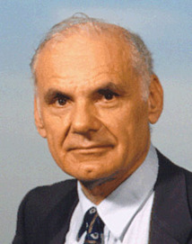

A ARPANET é uma rede comutada por pacotes, criada pela DARPA como um modelo de troca de compartilhamento de informações, que surgiu de uma preocupação do governo Estados Unidos da América que durante a guerra fria, temia o fato que caso uma base militar fosse atingida e destruida pelo ataque de seus inimigos, que na época era a União Soviética, todas as informações ali contidas não seriam também destruidas, pois haveria uma rede que garantiria que as mesmas estariam salvas em outra base militar. Preocupação esta, que deu inicio ao surgimento daquilo que hoje conhecemos como internet.
Idealizada por Bob Taylor e Joseph Carl Robnett Licklider (ou simplesmente Lick) a ARPANET surgiu em 1966 para possibilitar o contato entre computadores remotos. Sua criação teve a participação de Larry Roberts, que foi nomeado por Taylor para o gerenciamento do programa, que por sua vez, convidou Donald Davies, cientista da compuntação que elaborou a comutação dos pacotes, e também buscou informações de Paul Baran, que também foi um desenvolvedar indepedente da comutação de pacotes.


Em 1969 os 4 primeiros computadores foram conectados, mas eles falavam em códigos diferentes e por isso o NCP foi implementado em 1970, para só então em 1971 a rede ser declarada operacional, o que permitiu o login remoto, transferência de arquivos e e-mail. Em 1981 a ARPANET foi ampliada quando a NSF financiou a CSNET e em 1983 ela foi dividida em 3 partes: A NSFNET, a MILNET e a rede Comercial, também nesse ano foi implantada a quarta versão do TCP/IP porque a quantidades de computadores conectados já era tão grande ao ponto do NCP se tornar impraticável, sendo em 1990 formalmente desativada.